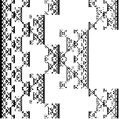

| 1. (q) This fractal consists of N = 4 pieces, with r1 = r2 = 1/2 and r3 = r4 = r5 = r6 = 1/4. The dimension, d, is the solution of the Moran equation |
| 2(1/2)d + 4(1/4)d = 1 |
| Taking x = (1/2)d, the Moran equation becomes the quadratic equation |
| 4x2 + 2x - 1 = 0 |
| The positive solution is x = (-1 + √5)/2. |
| Solving x = (1/2)d for d gives |
| d = Log((-1 + √5)/2)/Log(1/2), approximately 1.694. |
|  |
Return to Homework 4 Practice.